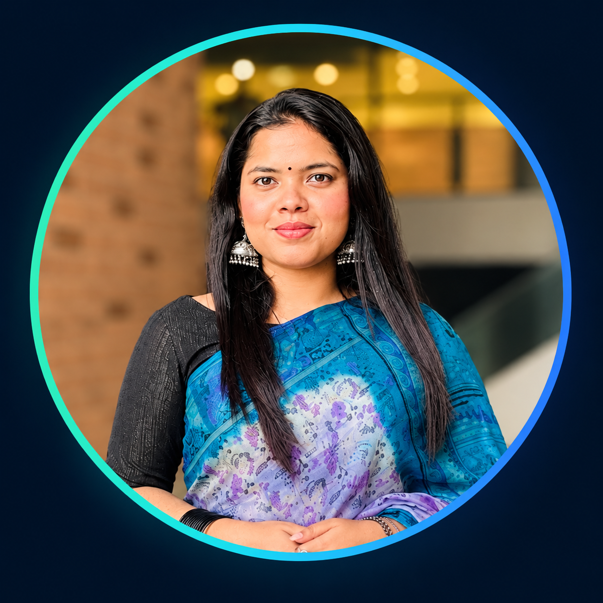

OPEN TO INTERNSHIP OPPORTUNITIES
Hello, I'm
Samiha Hossain Tithi.
Computer Science Student &
Developer / Research Enthusiast
Computer Science student at UIU, interested in Networking and Cyber Security, research, edge computing, and sustainable technologies. I enjoy learning through hands-on projects and exploring practical solutions to real-world computing challenges.

CURIOUS MIND. PRACTICAL BUILDER.
01 / ABOUT
A little about me.
I’m Samiha Hossain Tithi, a Computer Science and Engineering student at United International University with a strong interest in networking, cybersecurity, and emerging computing technologies.
I enjoy learning by building practical projects, understanding computer networks and distributed systems, and exploring ways to make technology more secure and sustainable. I am also interested in academic research and collaborative problem-solving.
I'm currently growing my skills through coursework, hands-on projects, and research in networking, cybersecurity, Vehicular Edge Computing, Multi-access Edge Computing, and Green Computing.
01
BuildWeb applications & practical solutions
02
ExploreEmerging computing technologies
03
ResearchEfficient, secure & sustainable systems
02 / TOOLKIT
Skills & technologies.
Technologies I have worked with and continue to develop.
Web Development
Database & Tools
Research Interests
Edit this list to reflect your current proficiency. Include only skills you can confidently discuss in an interview.
03 / SELECTED WORK
Projects that bring ideas to life.
A selection of academic and technical work. Add repository links and screenshots before publishing.
STUDENT MARKETPLACE
UIU
BookHUB
Buy • Sell • Connect
UIU BookHUB — Student Marketplace
A student-focused online marketplace designed for United International University students to list, browse, buy or request books and other items. It includes wishlist management, messaging, seller reviews, purchase management, and profile editing.
Ask me about this project ↗WEB APPLICATION
GoGreen Dashboard
GoGreen — Reward-Based Smart Recycling System
A web-based recycling platform concept that connects users, pickup staff, and administrators through scheduled waste collection, QR-based verification, tracking, and reward points.
CARRSUMECCAR
Efficient Task Migration in Vehicular Edge Computing
Research on task migration and service continuity in mobile vehicular environments supported by edge computing.
Explore research context ↗✓
TRUST LAYERTrustX — Secure Migration
A security-focused research project exploring trust and secure task migration in distributed computing environments.
Explore research context ↗ENERGY↘EFFICIENCY
Energy-Efficient Task Migration
Ongoing research exploring energy-aware task migration and more sustainable resource utilization in computing environments.
Explore research context ↗04 / RESEARCH
Questions worth exploring.
My academic research interests and current directions.
⌬
Research interests
I am interested in improving how computing systems allocate resources, maintain service continuity, and reduce energy consumption while preserving security and performance.
01↗
Vehicular Edge Computing & MEC
Mobility-aware task migration and service continuity.
02↗
Green Computing
Energy-efficient task scheduling and sustainable resource use.
03↗
Networking & Cybersecurity
Computer networks, trust, authentication, and secure migration in distributed systems.
Research status: Some topics are ongoing academic work. Add paper titles, co-authors, publication venues, and links only when confirmed.
05 / EDUCATION
My academic journey.
CURRENT
BSc in Computer Science and Engineering
United International University (UIU) · Bangladesh
Coursework and academic projects across software development, computer networking, computer security, and emerging computing technologies. Expected graduation: 2027.
Expected graduation · 2027Confirm your exact degree title, department, expected graduation date, and any previous education before publishing.
06 / GET IN TOUCH
Have an opportunity
or an idea? Let's connect.
I'm open to conversations about software development internships, research collaboration, and learning opportunities.
Send me an email ↗